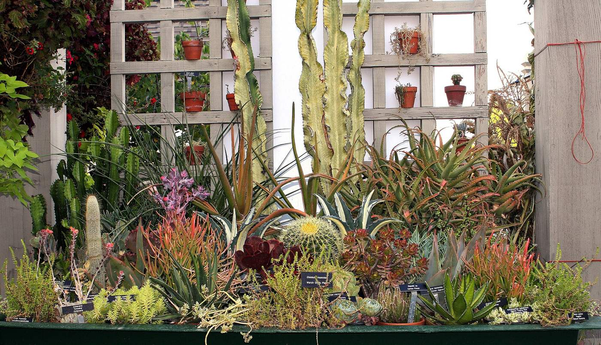
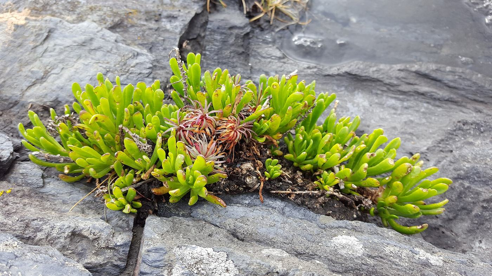

お店のこと
上田市神畑の洋菓子・パン店「LEVRE and BON」のパン部門が独立し、2026年1月、上田合同庁舎の近くにオープンしたお店です。店側は、甘いパンからお惣菜パンまで、子どもから高齢者まで世代を問わず毎日楽しめるパンづくりを心がけているとのことです。
- 天然酵母のパンが中心。食パン・クロワッサン・菓子パン・サンドイッチなど多彩
- 店内には、サボテンやアロエなどの植物の販売コーナーがあります
- 入って左側にイートインスペース。木目を感じるブラウンとホワイトの店内
- レジ前には冷蔵のサンドイッチ、飲み物、ジェラートも


店名「andBON」「&plants」の意味は公表情報では確認できていません。「パンと植物」という組み合わせは、制作側のイメージです。
パンと、ひと息
ラインナップの詳細・価格は準備中です。取材記事などで紹介されている内容の一部です。


緑のコーナー
サボテンやアロエなど、植物の販売もあるとされています。パンを選ぶついでに、お気に入りの一鉢を探せるかもしれません。(種類・価格は準備中)


営業時間・定休日・価格・電話番号: 準備中です。最新情報はInstagramをご確認ください。

口コミ
イメージ例パンを選んでいたら、店の隅の植物が気になってしまいました。
イートインでゆっくりできそうな雰囲気だと思います。
家族みんなが好きなパンを選べそうで、毎日通いたくなります。
※上記は制作側が作成したイメージ例で、実在のお客様の声ではありません。
アクセス
〒386-0012 長野県上田市中央６丁目１１−１９
電話: 準備中 / 営業時間・定休日: 準備中
掲載写真はフリー素材のイメージで、店舗の実際の様子・商品ではありません。
写真クレジット
- bread-light.jpg: 「Fresh made bread 06」 FranHogan / CC BY-SA 4.0 / 出典
- bread-dark.jpg: 「Fresh made bread 05」 FranHogan / CC BY-SA 4.0 / 出典
- pastry-light.jpg: 「Coffee-morning-breakfast-croissant (24300690486)」 www.Pixel.la Free Stock Photos / CC0 1.0 / 出典
- croissants.jpg: 「Croissants au beurre (18953292873)」 Herry Wibisono (herryway) / CC0 1.0 / 出典
- toast.jpg: 「Jam and toast」 Harry Wood / CC0 1.0 / 出典
- shelf.jpg: 「Loaves of Bread (Unsplash)」 Clark Young / CC0 1.0 / 出典
- flour.jpg: 「Cookie ingredients like flour and butter」 markusspiske / CC0 1.0 / 出典
- oven.jpg: 「Baking Bread 001」 George M. Groutas / CC BY 2.0 / 出典
- wheat.jpg: 「Lone ear of wheat (Unsplash)」 Jez Timms / CC0 1.0 / 出典
- latte.jpg: 「Coffee-latte」 Petr Kratochvil / CC0 1.0 / 出典
- loaf.jpg: 「Sourdough Loaf (217346645)」 Dana Hutchinson / CC BY 3.0 / 出典
- beans.jpg: 「Coffee cup on coffee beans」 Toni Cuenca / CC0 1.0 / 出典
- succulents.jpg: 「Succulent collection (processed)」 Hardyplants / CC0 1.0 / 出典
- succulent-small.jpg: 「Succulents of Penally Hill near Boscastle」 Роман Рябенко / CC0 1.0 / 出典